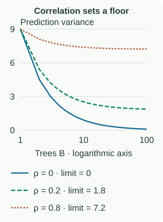

Bagging & Random Forests
Bagging makes an unstable learner more stable by averaging models trained on resampled data. Deep decision trees are a natural fit: small changes to the data can change an early split and therefore an entire subtree.
Bootstrap: sample rows with replacement
Given $n$ rows, draw $n$ times uniformly with replacement to create one bootstrap dataset. Repeat independently for each tree, train on each dataset, then aggregate predictions. Duplicated rows count repeatedly during training.
With row IDs $[1,2,3,4,5]$, one draw might be $[1,1,3,5,5]$. Rows 2 and 4 are out of bag for that tree. A bootstrap dataset has the same number of draws as the original, but usually fewer distinct rows. This is the sampling construction behind Breiman’s bagging method.
A particular row is missed in one draw with probability $1-1/n$. All $n$ draws must miss it, so:
$$P(\text{row is OOB})=\left(1-\frac1n\right)^n\longrightarrow e^{-1}\approx0.368.$$Consequently, the expected fraction of distinct rows present is approximately $1-e^{-1}=0.632$ for large $n$. These are expectations, not exact percentages in every sample. For $n=5$, the omitted probability is $0.8^5=0.32768$.
How aggregation works
For regression, $\bar f(x)=B^{-1}\sum_{b=1}^B f_b(x)$. For classification, specify whether you mean majority vote of hard labels or average class probabilities followed by argmax. They can disagree: three binary probabilities $(0.51,0.51,0.01)$ give two positive votes but an average probability of only $0.343$.
Proof: why more trees help, and where they stop
At one fixed $x$, suppose every tree prediction has variance $\sigma^2$ and each distinct pair has correlation $\rho$. Thus each pair’s covariance is $\rho\sigma^2$. Expand the variance of the sum:
$$\begin{aligned} \operatorname{Var}(\bar f) &=\frac{1}{B^2}\left[\sum_b\operatorname{Var}(f_b)+\sum_{b\ne c}\operatorname{Cov}(f_b,f_c)\right]\\ &=\frac{B\sigma^2+B(B-1)\rho\sigma^2}{B^2}\\ &=\sigma^2\left(\rho+\frac{1-\rho}{B}\right). \end{aligned}$$There are $B$ individual variance terms and $B(B-1)$ ordered cross terms. That count explains the entire derivation. The randomness here comes from training data and tree randomization; independently scheduled training jobs do not imply statistically independent predictions.

For $B=100$, $\sigma^2=9$ and $\rho=0.2$, the ensemble variance is $9(0.2+0.8/100)=1.872$. With independent predictions it would be $9/100=0.09$. As $B$ grows, the first case approaches $1.8$. The equal-variance/equal-correlation assumptions simplify the illustration; the general covariance-sum identity above them remains valid.
Random forests add feature randomness
If one feature dominates, many bootstrapped trees may choose it near the root and make similar errors. A classic random forest draws a random subset of candidate features at each split, then chooses the best split within that subset. This can lower correlation, at the cost of sometimes making an individual tree weaker. This strength–correlation trade-off is central to Breiman’s random forest analysis.
For each of B trees:
draw n training rows with replacement
grow a tree:
at each node, sample m candidate features
choose the best valid split among those features
stop according to depth / leaf-size controls
Predict by aggregating all treesFeature subsampling once per tree is a different random-subspace construction. A common classification starting point is $m\approx\sqrt p$, but the best value depends on the data. Extra Trees introduce additional randomization in candidate thresholds; whether they also bootstrap depends on configuration.
Out-of-bag evaluation, correctly
For training row $i$, collect only trees whose bootstrap samples excluded it: $\mathcal B_i=\{b:i\text{ was omitted from tree }b\}$. Predict it using those trees:
$$\hat y_i^{\mathrm{OOB}}=\frac{1}{|\mathcal B_i|}\sum_{b\in\mathcal B_i}f_b(x_i).$$This formula is for regression; classification aggregates OOB probabilities or votes. Score all eligible OOB predictions against their labels. Each row gets about $0.368B$ voters for large $n$; with too few trees some rows may get none.
OOB is a useful internal generalization estimate for appropriately sampled independent rows. It is not an untouched test set after repeated tuning. Nor does omitting a row from a tree undo preprocessing fitted using that row’s target. Target encoding, feature selection, and imputation must respect the evaluation split. Grouped patients, repeated users, and time series need evaluation splits that reflect deployment; random row omission does not enforce those boundaries.
Tune the source of the problem
- Number of trees: increase until validation performance stabilizes within your compute budget. More trees primarily stabilize averaging; they do not repair leakage or poor features.
- Candidate features: fewer can reduce correlation but weaken splits. Tune this trade-off instead of assuming the smallest value wins.
- Leaf size and depth: larger leaves or shallower trees smooth predictions and may improve generalization on noisy data.
- Sample fraction: fewer sampled rows can increase diversity and speed, but each tree learns from less information.
Limits an interviewer can probe
Bias: averaging systematically wrong predictions leaves the shared error. Bagging a very stable learner may add little. Extrapolation: a usual regression forest averages training-target means, so its predictions remain within the training-target range; it cannot extend a rising trend beyond that range. Interpretation: impurity importance can favor features with many possible splits. Held-out permutation importance asks how performance changes when a feature is shuffled, but correlated features can substitute for each other and shuffling can create unrealistic rows. Neither is a causal effect. See the ensemble documentation’s importance discussion.
Cost: prediction visits one path per tree, approximately $O(Bd)$ for maximum depth $d$; memory scales with total stored nodes. Training cost depends on split search, sorting, feature subsampling, and tree balance. Do not present a single training-complexity formula without specifying these choices.